Expected Time to Completion: 45 minutes
The ape package provides lots of useful, efficient tools for dealing with trees in R. We load it right away.
library("phyloseq"); packageVersion("phyloseq")## [1] '1.16.2'library("ape"); packageVersion("ape")## [1] '3.5'library("ggplot2"); packageVersion("ggplot2")## [1] '2.1.0'theme_set(theme_bw())load("example-data.RData")
ls()## [1] "closedps" "cpsp" "dpcoa" "duf" "dufPCoA"
## [6] "enterotype" "g" "newEnt" "newRoot" "ps0"
## [11] "qiimedata" "tree"
Parts of “phylo” object. It is actually a list
tree = phy_tree(closedps)
class(tree)## [1] "phylo"names(tree)## [1] "edge" "Nnode" "tip.label" "edge.length" "node.label"The edge matrix
head(tree$edge)## [,1] [,2]
## [1,] 74 1
## [2,] 74 75
## [3,] 75 2
## [4,] 75 76
## [5,] 76 77
## [6,] 77 78The edge matrix
tree$Nnode## [1] 72tree$tip.label[1:5]## [1] "169901" "673925" "4470518" "1107945" "4346374"taxa_names(tree)[1:5]## [1] "169901" "673925" "4470518" "1107945" "4346374"tree$edge.length[1:5]## [1] 0.39755 0.08322 0.38007 0.02085 0.39352tree$node.label[1:5]## [1] "" "" "" "" ""The node labels were empty. Let’s assign simulated bootstrap values to each node label using standard R list assignment semantics.
set.seed(711)
tree$node.label <- round(runif(tree$Nnode, 0 , 1), digits = 3)All other aspects of a “phylo” object are just as easy to modify. This is both convenient and dangerous. Why?
What about assigning to a tree in a phyloseq object?
Easy! Just use the same list assignment semantics.
phy_tree(closedps)$node.label[1:5]## [1] "" "" "" "" ""phy_tree(closedps)$node.label <- tree$node.label
phy_tree(closedps)$node.label[1:5]## [1] 0.290 0.426 0.325 0.630 0.445You can even replace the entire tree.
Caution: this may side-step the automatic index checks, like taxa names, that are built-in to the phyloseq function.
phy_tree(closedps) <- tree
phy_tree(closedps)##
## Phylogenetic tree with 73 tips and 72 internal nodes.
##
## Tip labels:
## 169901, 673925, 4470518, 1107945, 4346374, 4414420, ...
## Node labels:
## 0.29, 0.426, 0.325, 0.63, 0.445, 0.123, ...
##
## Rooted; includes branch lengths.Let’s check which taxa is considered root in this tree.
is.rooted(tree)## [1] TRUE# random root
newRoot = taxa_names(tree)[sample(ntaxa(tree), 1)]
tree <- unroot(tree)
tree <- root(tree, newRoot, resolve.root = TRUE)Add the node IDs on a “native R” ape tree plot
plot(tree); nodelabels()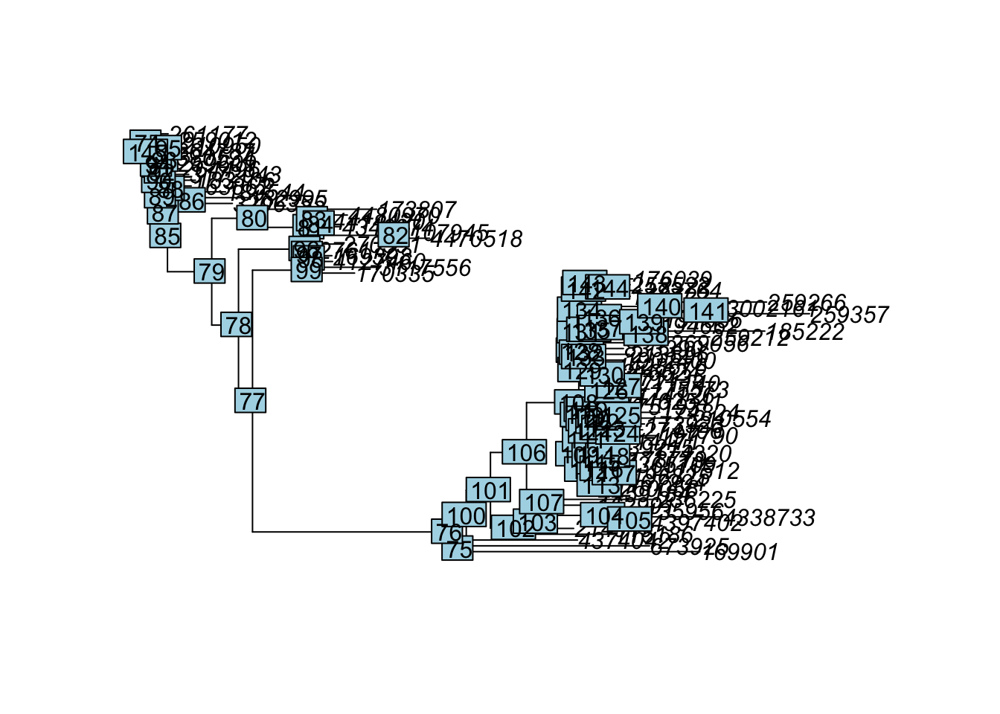
Plot the pretend bootstrap values instead of the node ID.
plot(tree); nodelabels(tree$node.label)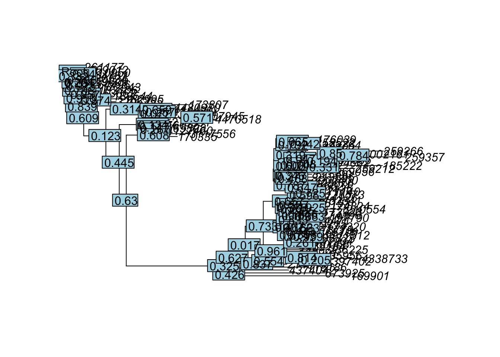
plot_treephyloseq defaults are a bit more legible.
plot_tree(tree, ladderize = "left", label.tips = "OTU")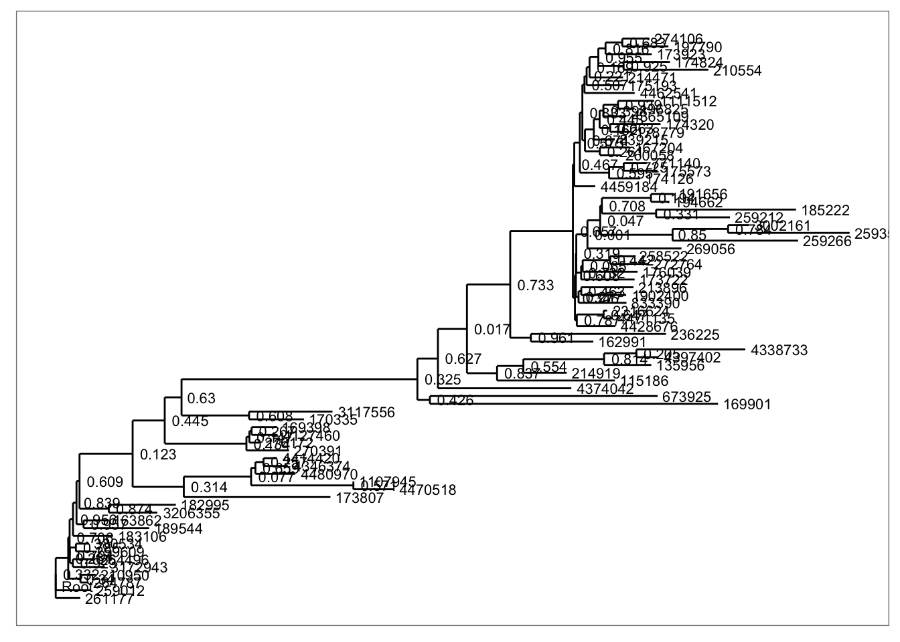
Can add symbols to simplify bootstrap values
plot_tree(tree,
nodelabf = nodeplotboot(80),
ladderize = "left",
label.tips = "OTU")## Warning in asMethod(object): NAs introduced by coercion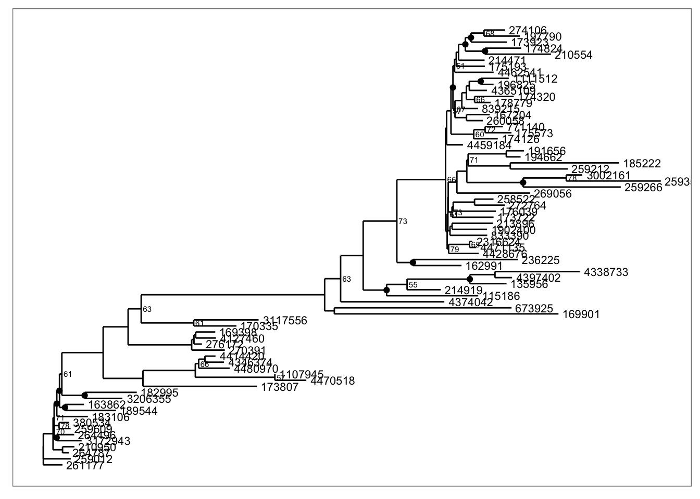
Can add symbols representing samples
plot_tree(closedps, nodelabf = nodeplotboot(80),
ladderize = "left", label.tips = "OTU",
color = "Treatment", justify = "left")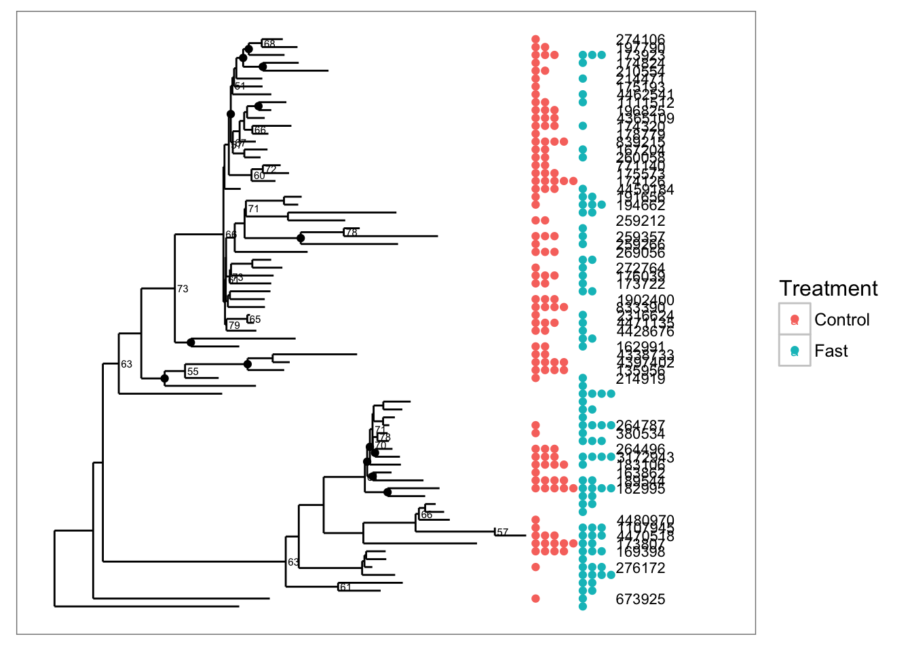
Convert to relative abundance, then calculate distance.
cpsp = transform_sample_counts(closedps, function(x){x/sum(x)})
duf = phyloseq::distance(cpsp, "wunifrac")dufPCoA = ordinate(physeq = closedps,
method = "PCoA",
distance = duf)
plot_scree(dufPCoA)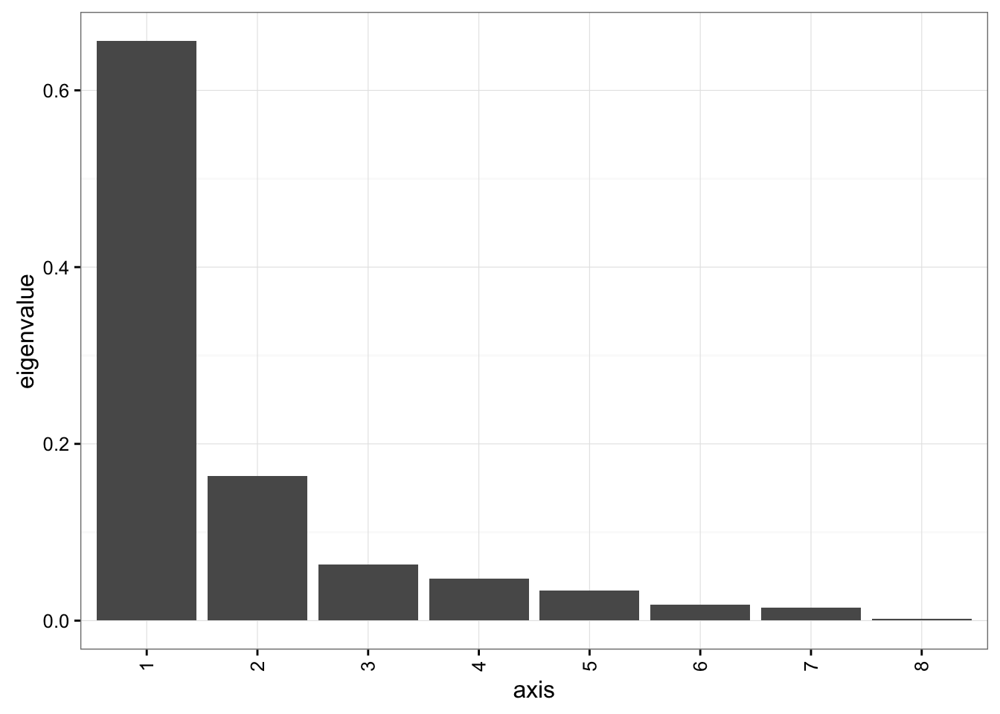
Make the w-UniFrac PCoA graphic
plot_ordination(cpsp, dufPCoA,
color = "Treatment",
title="w-UniFrac PCoA") +
geom_point(size=7)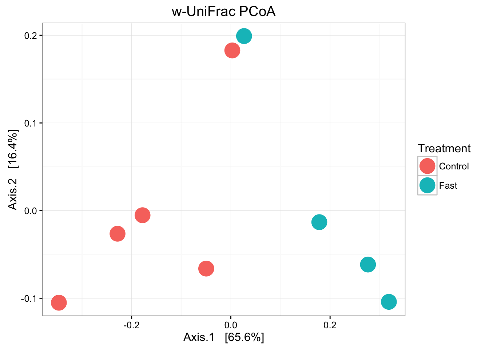
plot_ordination(cpsp, dufPCoA,
type = "split",
shape="Treatment",
color="Phylum",
title="wUF-MDS Split Plot")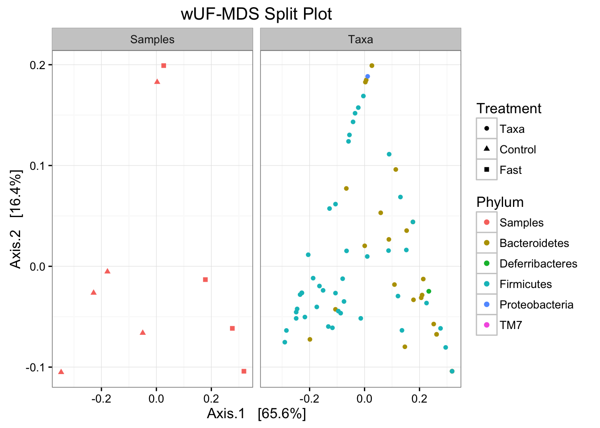
What about alternative ordination method, like NMDS?
How would you encode that?
dpcoa = ordinate(cpsp, "DPCoA")
plot_scree(dpcoa)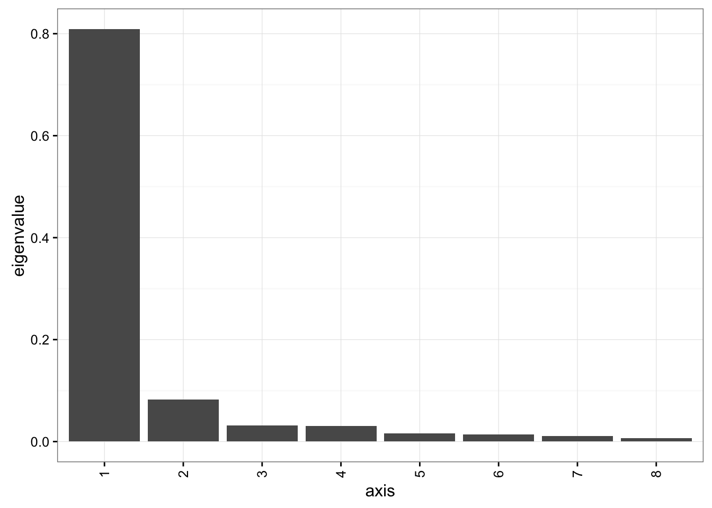
plot_ordination(cpsp, dpcoa,
color = "Treatment", title="DPCoA") + geom_point(size=7)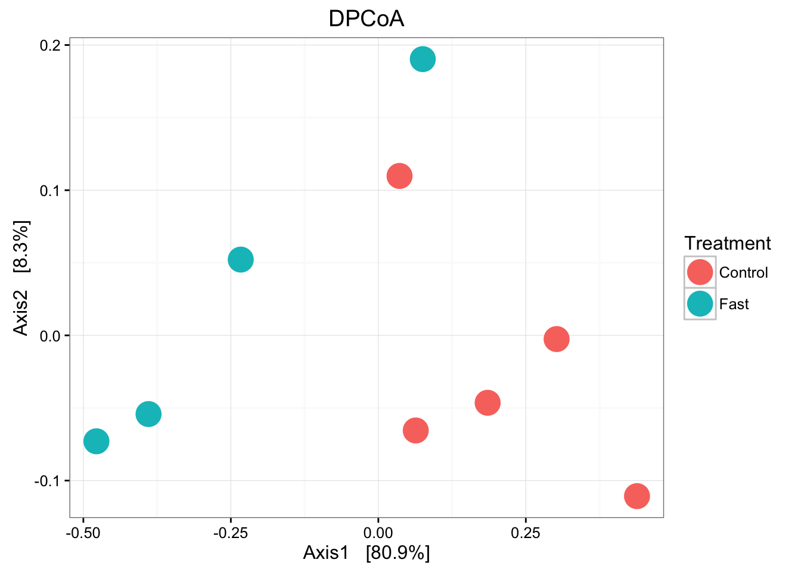
plot_ordination(cpsp, dpcoa, type = "split",
shape="Treatment", color="Phylum", title="DPCoA Split Plot")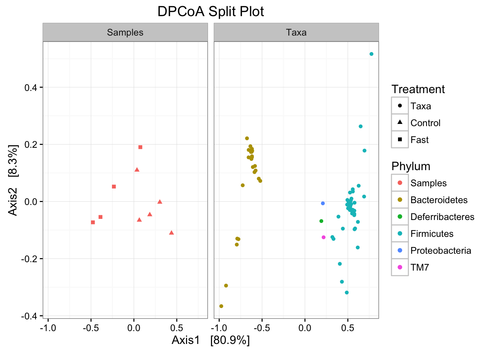
Lots on this subject. See CRAN graphical models task view.
phyloseq uses the igraph package for its internal network methods.
There are lots of types of networks.
Here we are discussing a very simple network that represents (dis)similarity values. Its main purpose in our case is for data exploration.
Some small modification to the sample data… (this will save us the hassle of some pesky warning messages, but everything still works; the offending samples are anyway omitted).
data("enterotype")
newEnt = as.character(sample_data(enterotype)$Enterotype)
newEnt[is.na(newEnt)] <- "Unassigned"
sample_data(enterotype)$Enterotype <- factor(newEnt)This will create an igraph object the main class for representing a graph object in igraph.
g = make_network(enterotype, distance = "bray", max.dist = 0.4)This returned an igraph object, but to use igraph tools on it we actually need to load igraph. Lots of stuff one can do with igraph. The following is an example of extracting information about the first 10 vertices.
library("igraph")
# cliques(g)
V(g)[1:10]## + 10/276 vertices, named:
## [1] AM.AD.1 AM.AD.2 AM.F10.T1 AM.F10.T2 DA.AD.1 DA.AD.1T DA.AD.2
## [8] DA.AD.3 DA.AD.3T DA.AD.4We can also plot this object in base R using igraph’s extension to plot.
plot(g, vertex.label=NA)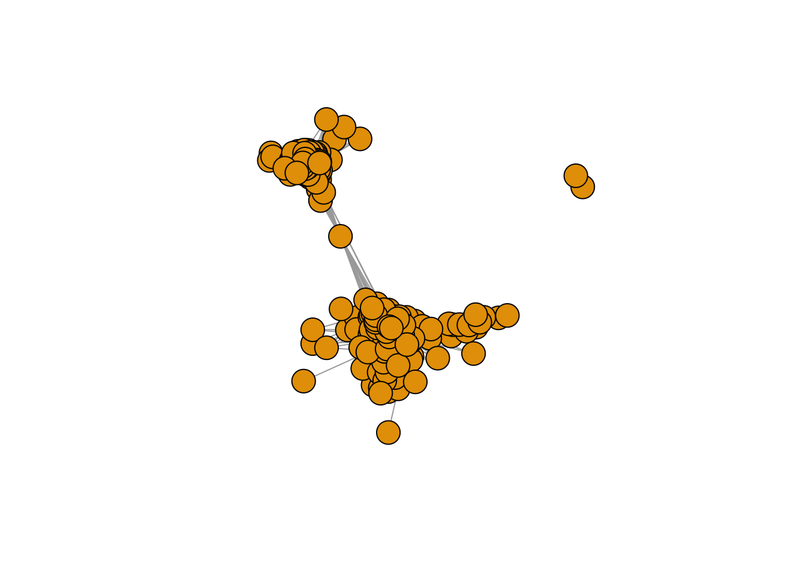
But easier to use ggplot2-based graphics provided in phyloseq (next)
There are two network plot functions in phyloseq:
plot_netplot_network (legacy, igraph manipulation)plot_net
plot_networkThere is a random aspect to some of the network layout methods. For complete reproducibility of the images produced later in this tutorial, it is possible to set the random number generator seed explicitly:
set.seed(711L)The newer plot_net function does not require a separate make_network function call, or a separate igraph object. For examples running the older plot_network function, which may provide some added flexibility with igraph objects, see the plot_network section later.
Try plot_net with the default settings.
# library("phyloseq")
# data(enterotype)
plot_net(enterotype,
maxdist = 0.35,
point_label = "Sample_ID")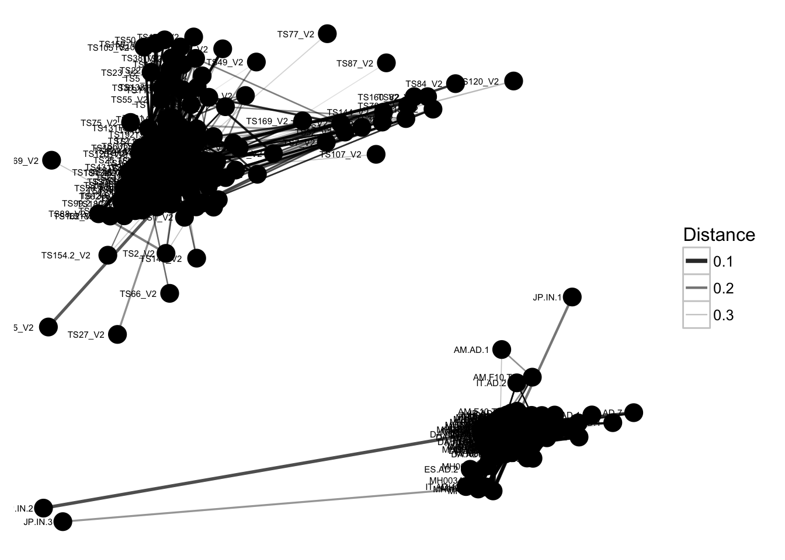
The previous graphic displayed some interesting structure, with one or two major subgraphs comprising a majority of samples. Furthermore, there seemed to be a correlation in the sample naming scheme and position within the network.
Instead of trying to read all of the sample names to understand the pattern, let’s map some of the sample variables onto this graphic as color and shape:
plot_net(enterotype,
maxdist = 0.3,
color = "SeqTech",
shape="Enterotype")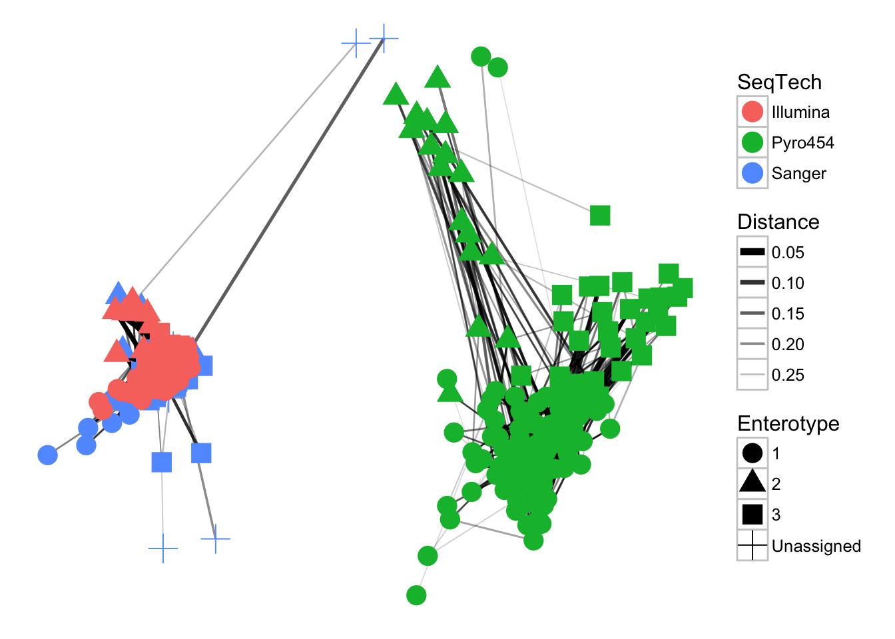
In the previous examples, the choice of maximum-distance and distance method were informed, but arbitrary.
maxdist value is decreased?? (hint: this will usually decrease the number of edges in the network).